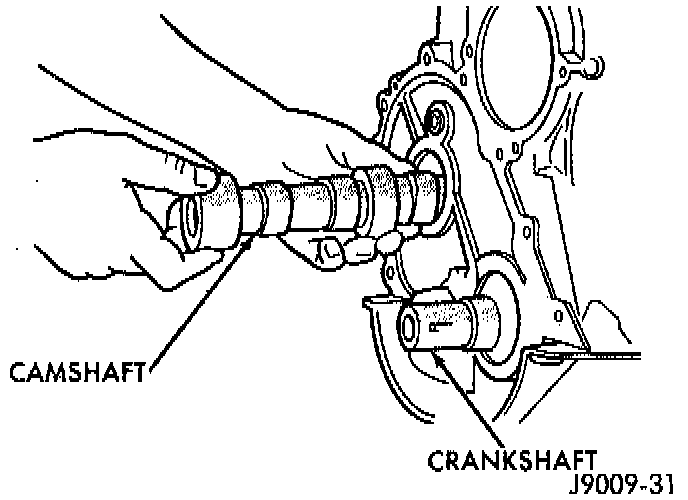

Removal

WARNING: THE COOLANT IN A RECENTLY OPERATED ENGINE IS HOT AND PRESSURIZED. RELEASE THE PRESSURE BEFORE REMOVING THE DRAIN COCK, CAP AND DRAIN PLUGS.
1. Disconnect negative cable from battery.
2. Drain the cooling system. DO NOT waste reusable coolant. If the solution is clean, drain it into a clean container for reuse.
3. Remove the radiator or radiator and condenser, if equipped with A/C. Refer to Cooling System.
4. Remove the air conditioner condenser and receiver/drier assembly as a charged unit, if equipped. Refer to Heating and Air Conditioning.
5. Remove the distributor cap and mark the position of the rotor.
6. Remove the distributor and ignition wires.
7. Remove the engine cylinder head cover.
8. Remove the rocker arms, bridges and pivots.
9. Remove the push rods.
10. Remove the engine cylinder head and gasket.
11. Remove the hydraulic valve tappets from the engine cylinder block.
12. Remove the vibration damper.
13. Remove the timing case cover.
14. Remove the timing chain and sprockets.
15. Remove the front bumper and/or grille, as required.
16. Remove the camshaft.